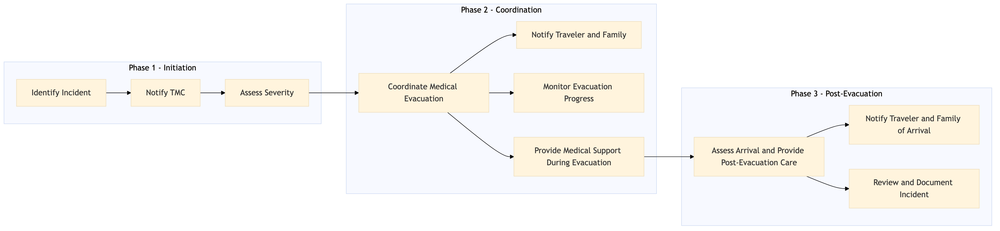

This process document outlines the coordination of medical evacuation and repatriation services for travelers under the TMC Duty of Care and Risk Management domain.
| Trigger | A traveler reports a serious health issue or injury that requires immediate medical attention or evacuation. |
| Outcome | The traveler receives timely and appropriate medical care, and is safely repatriated if necessary. The process is documented and reviewed for continuous improvement. |
| Systems | Expedia Open World Partner Central Concur T2 Concur Expense Amadeus GDS Sabre GDS Travelport International SOS Salesforce Tableau AWS SageMaker Snowflake Kafka S/4HANA Cvent Analytics Cloud Workday |

Click to enlarge
| Step | Name & Pain Point | Role | System | Input | Output | KPI | Flags |
|---|---|---|---|---|---|---|---|
| 1.1 | Identify Incident Delayed reporting due to unclear procedures | Traveler or Designated Contact | Expedia Open World, Partner Central | Incident report | Incident logged in system | Time to log incident < 15 minutes | ⚠ Exception |
| 1.2 | Notify TMC Inconsistent communication channels | Traveler or Designated Contact | Concur T2, Concur Expense | Incident details | Notification sent to TMC | Time to notify TMC < 30 minutes | ⚠ Exception |
| 1.3 | Assess Severity Lack of clear criteria for severity | TMC Medical Coordinator | S/4HANA, International SOS | Incident details | Severity assessment and next steps | Time to assess severity < 1 hour | ◆ Decision |
| 1.4 | Coordinate Medical Evacuation Inadequate provider network | TMC Medical Coordinator | Amadeus GDS, Sabre GDS, Travelport | Severity assessment and destination details | Evacuation plan and booking confirmation | Time to coordinate evacuation < 2 hours | ⚠ Exception |
| 1.5 | Notify Traveler and Family Language barriers in communication | TMC Communication Officer | Salesforce, Tableau | Evacuation plan details | Notifications sent to traveler and family | Time to notify < 30 minutes | ⚠ Exception |
| 1.6 | Monitor Evacuation Progress Data integration issues | TMC Medical Coordinator | Kafka, Snowflake | Real-time data from evacuation provider | Updated status reports | Time to update status < 15 minutes | ⚠ Exception |
| 1.7 | Provide Medical Support During Evacuation Limited access to traveler's medical records | TMC Medical Coordinator | International SOS, Cvent | Traveler's medical history and current condition | Medical support plan and communication with evacuation provider | Time to provide support < 1 hour | ⚠ Exception |
| 1.8 | Assess Arrival and Provide Post-Evacuation Care Inadequate post-evacuation facilities | TMC Medical Coordinator | Analytics Cloud, Workday | Traveler's condition upon arrival | Post-evacuation care plan and documentation | Time to assess < 1 hour | ◆ Decision |
| 1.9 | Notify Traveler and Family of Arrival Language barriers in communication | TMC Communication Officer | Salesforce, Tableau | Arrival details | Notifications sent to traveler and family | Time to notify < 30 minutes | ⚠ Exception |
| 1.10 | Review and Document Incident Data privacy concerns | TMC Risk Manager | AWS SageMaker, Snowflake | Incident details and outcomes | Incident report and lessons learned | Time to review < 24 hours | ⚠ Exception |